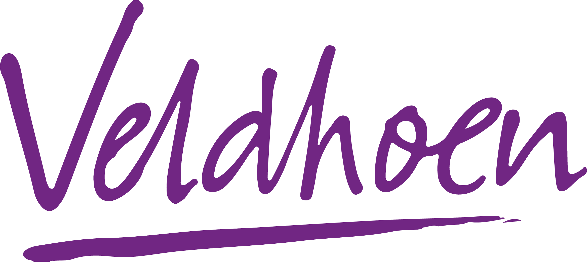
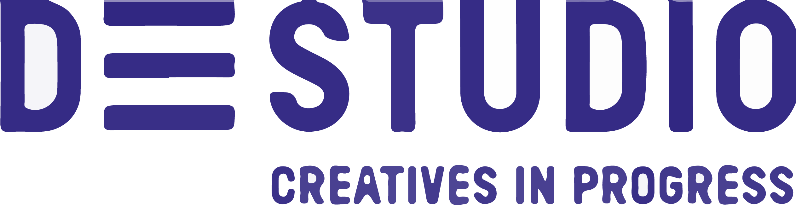

-
Allround Freelance Designer,
Benbuhr Design
Jan 2022 – present
- Graphic Design
- Concept Design
- Photography
- Videography
-

Creative Designer,
Christine Veldhoen Funeral Home
Sep 2019 - present
- Onboarding employees
- Working in stressful and deadline strict environment
- Creating concepts and designs
- Making and editing photography and videography
-
Graphic Design Intern,
Image Group Holland
Aug 2018 - Nov 2018
- Graphic Design
- DTP Designer
- Product Photography
-

Graphic Design Intern,
De Studio Eindhoven
Aug 2018 - Nov 2018
- Graphic Design
- DTP Designer
- Concept and Branding Design
-

Store Employee,
Action
2016 - 2019
-

BA in Creative Business,
Breda University of Applied Sciences
2021 – present
- Class representative
- Specialisation in TV and AV
- Exchange with Flaggstaff University
-

BA in Visual Communication,
University of Northampton
2018-2019
- Specialization in Graphic Design
- Fast track
- Diploma obtained in 2019
-

MBO in Product, Spatial, and Media Design,
Sint Lucas Boxtel
2015-2019
- Specialization in Media Design
- Fast track
- Diploma obtained in 2019
-
High School,
Udens College
2011-2015
- Extracurricular: Art classes
- Diploma obtained in 2015